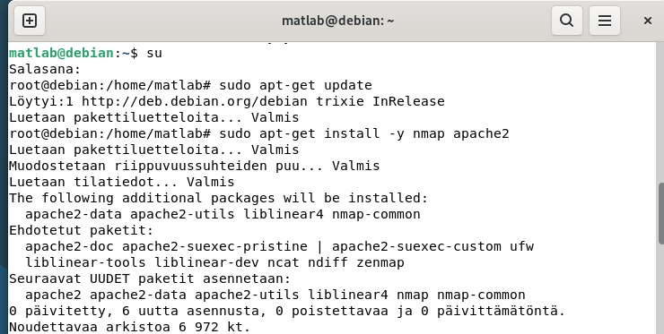
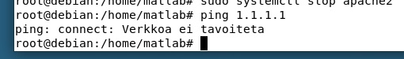
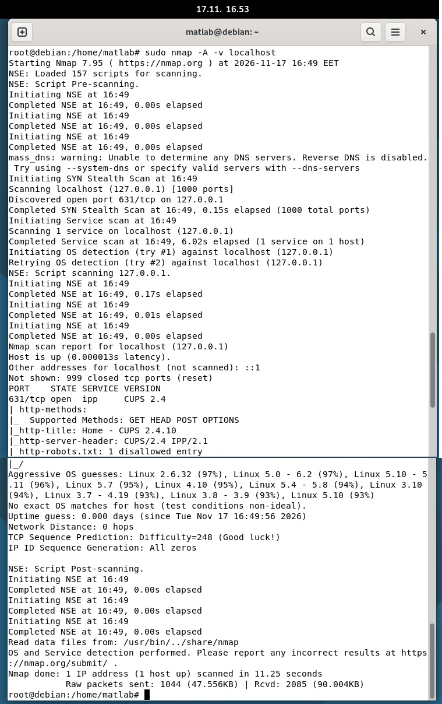
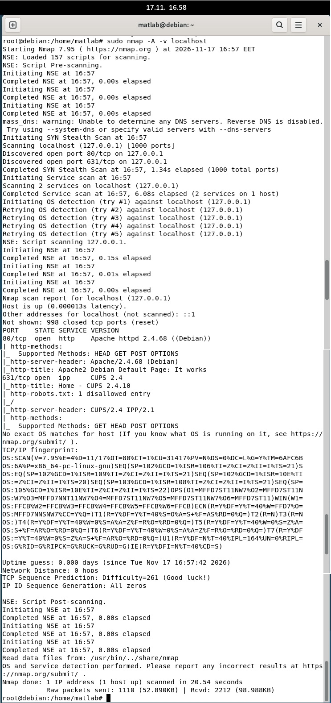

- A RSS reader automatically pulls new articles from many websites into a single dashboard and saves time that doesn't need to be used on manually checking each site to look for updates.
- RSS feeds bypasses social media algorithms and deliver site's content in the order it was published.
This Supreme court case was about a port scanning insident where a 17 year old boy scanned OP Financial Groups network ports.
- The Supreme Court of Finland ruled that port scanning is a crime, an attempted computer break-in.
- The boy was held liable to pay damages for the investigation costs incurred by the target bank.
KKO:2003:36 (Finlex).



From the test results we can notice that results are pretty much the same but on the second test we see that a http apache service has appeared.